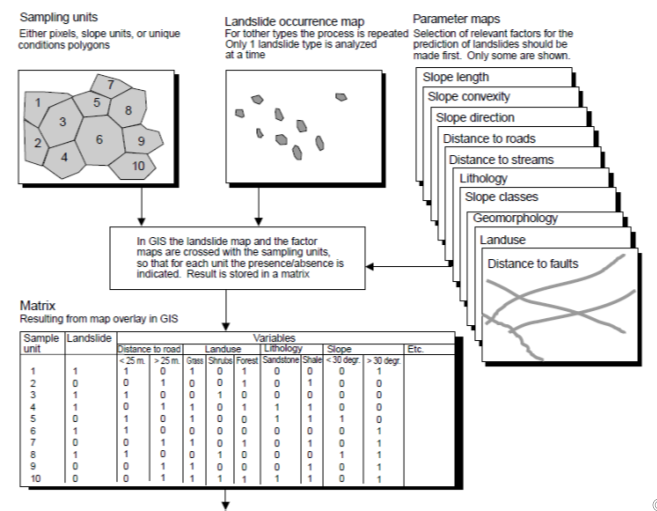
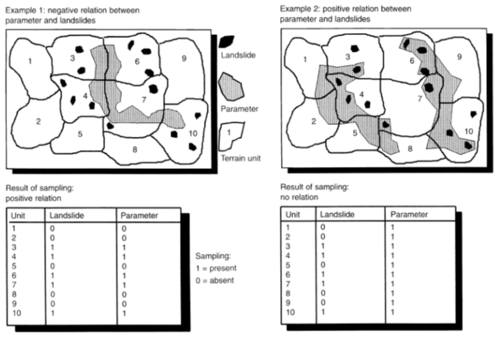
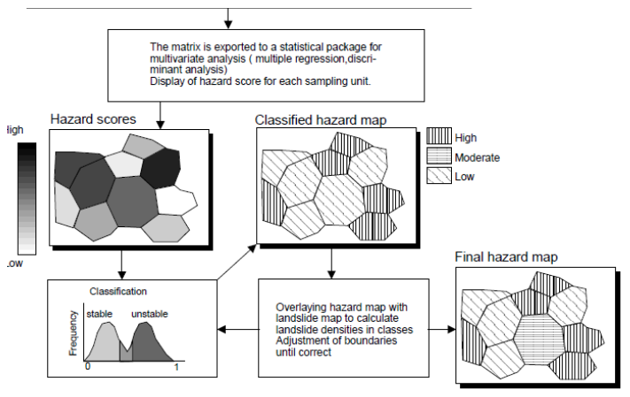

CARTOGRAFÍA GEOTÉCNICA
Métodos Estadísticos Multivariados
Prof. Edier Aristizábal

Métodos Estadístico (data-driven)
Los métodos estadísticos se ajustan mejor para movimientos en masa:.
- Que no se mueven mucho de su área fuente
- Que no cambian significativamente su tamaño y geometría durante el movimiento (rotacional o traslacional).
Y menos aplicables a movimientos en masa:
- Movimientos en masa que viajan largas distancias (cientos de miles de metros)
- Que cambian significativamente su volumen y geometría durante su movimiento desde el área fuente a la zona depositacional.
- Para debris flow se recomienda generalmente modelos con base física.
La falta de algunos movimientos en masa en el inventario puede no representar un problema para el modelo de susceptibilidad, en tanto que el inventario tenga una razonable representación de la abundancia y distribución de los movimientos en la zona de estudio. Consistencia es mas importante que este completo.
Método Estadístico Multivariado
Evalúan la relación combinada entre una variable dependiente (ocurrencia de deslizamientos) y una serie de variables independientes (factores que controlan la ocurrencia de deslizamientos). Convirtiéndose en el método estándar para escalas regionales de evaluación de la susceptibilidad.
Limitaciones
- La hipótesis general que los deslizamientos ocurren por la misma combinación de factores a lo largo del área de estudio.
- Ignorar el hecho que la ocurrencia de ciertos tipos de deslizamientos están controlados por ciertos factores de causa que deben ser analizados o investigados individualmente.
- Extender el control de algunos factores espaciales que pueden variar ampliamente en áreas con condiciones geológicas complejas y ambientes culturales.
- La falta de un criterio de experto adecuado en diferentes tipos de deslizamientos, procesos y factores de causas.
Procedimiento (i)
Procedimiento (ii)
Procedimiento (ii)
Matrix Assessment
También denominado Método de Análisis Condicional (Clerici et al., 2002; 2006). No requiere asunciones de aleatoriedad del fenómeno bajo análisis.
Metodología
- Mapa de inventario de deslizamientos
- Mapa de factores explicativos
- Definir UCU
- Cruzar UCU vs inventario de deslizamientos
- Definir para cada UCU % de área con deslizamientos [0-1]
- Determine categorías relativas de susceptibilidad a deslizamientos (k-means cluster analysis).
La densidad de deslizamientos es equivalente a la probabilidad futura de la ocurrencia de deslizamientos. L: probabilidad de ocurrencia de deslizamiento. UCU: Unidad de condiciones Únicas.
$ P(L/UCU) = (landslide area & UCU area) / UCU area$
Función LOGIT
Regresión Logística
La Regresión Logística es una combinación lineal de variables independientes (factores explicativos) para explicar la varianza en una variable dependiente (inventario de deslizamientos) tipo dummy [0 – 1].
Ventajas
- Las variables predictoras pueden ser continuas, discretas, dicótomas, o cualquier combinación de ellas.
- La variable dependiente es dicotoma (binaria)
- A pesar de que el modelo transformado es lineal en las variables, las probabilidades no son lineales
Desventajas
- Los pesos de las variables terminan siendo un promedio para toda el área de estudio, los cuales en realidad pueden diferir en diferentes partes del área de estudio.
- La función objetivo es una combinacion lineal de las variables independientes
Sea p(x) la probabilidad de éxito cuando el valor de la variable predictora es x, entonces:
$p(x) = \frac{e^{a+\sum bx}}{1+e^{a+\sum bx}} = \frac{1}{1+e^{-(a+\sum bx)}}$ $\frac{p(x)}{1-p(x)} = e^{a+\sum bx}$ $Ln(\frac{p(x)}{1-p(x)}) = a+\sum bx$Donde $a$ es el intercepto del modelo, $b$ son los coeficientes del modelo de regresión logística, y $x$ son las variables independientes (predictoras).
$P(y=1) = \frac{1}{1+e^{-(a+\sum bx)}}$Donde, P es la probabilidad de Bernoulli que una unidad de terreno pertenece al grupo de no deslizamientos o al grupo de si deslizamiento. P varía de 0 a 1 en forma de curva “S” (logística).